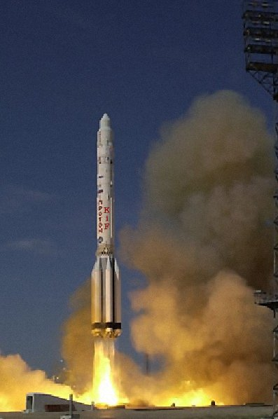

This is a picture from the launch of the satellite Zvezda
with a Proton rocket on 2000 July 18.
The launch (and the module) were mostly financed by us.
We use this module to get our low latencies everywhere on the world
(that is, this module and NGX™).